11 OI Reference¶
11.1 Navigation Overview¶
The Applicator OI uses a fixed navigation bar across the top of every screen. Selecting any tab navigates directly to that screen. MANUAL and MAINT contain sub-screens accessible from within those screens.
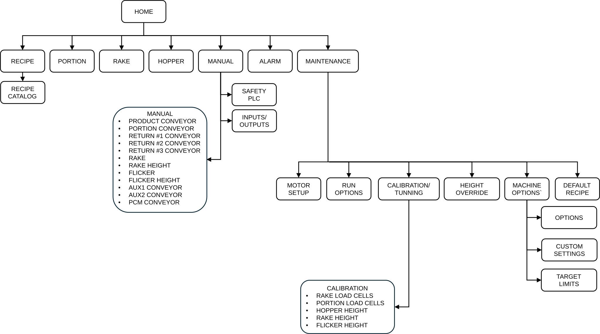
11.2 HOME Screen¶
The HOME screen is the primary operating screen. It provides machine start/stop controls, mode selection, tension cylinder controls, and the Applicator Status Banner.
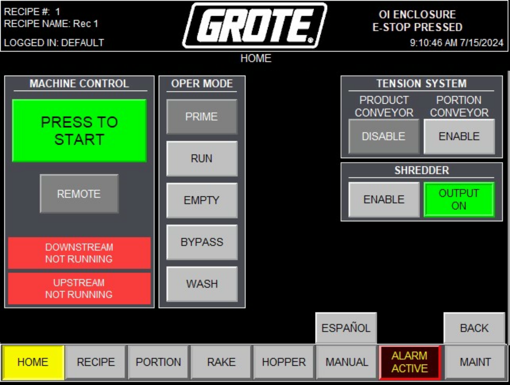
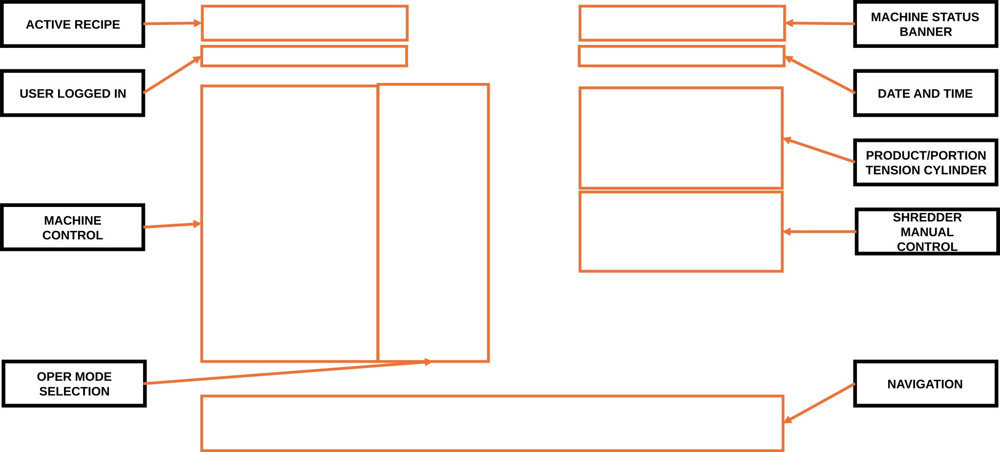
| Control / Display | Description |
|---|---|
| Applicator Status Banner | Full-width banner at the top of the screen. Color and message reflect the current machine state. See Section 11.10. |
| Active Recipe | Displays the name of the currently loaded recipe. |
| User Logged In | Displays the currently logged-in user level. |
| Date and Time | Current system date and time. |
| PRESS TO START | Hold for 3 seconds to start the Applicator in the selected mode. |
| PRESS TO STOP | Stops the Applicator. |
| MACHINE ENABLE | Resets the safety circuit after an E-stop or guard opening. Hold and release to reset control power. |
| FAULT RESET | Clears latched fault conditions. Navigate to ALARMS screen to identify and correct the fault first. |
| Mode selection | Selects operating mode: PRIME, RUN, EMPTY, BYPASS, or WASH. |
| LOCAL / REMOTE | Toggles MACHINE MODE between LOCAL (OI control) and REMOTE (line controller control). |
| PRODUCT CONVEYOR tension | Enables or disables the PRODUCT CONVEYOR tension cylinder. |
| PORTION CONVEYOR tension | Enables or disables the PORTION CONVEYOR tension cylinder. |
| SHREDDER manual | Manual output control for SHREDDER interlock (when SHREDDER CONTROL is enabled in MACHINE OPTIONS). |
11.3 RECIPE Screen¶
The RECIPE screen provides full recipe management. All editable fields are highlighted in yellow or green. For complete field-by-field descriptions, see Section 5: Recipe Setup.
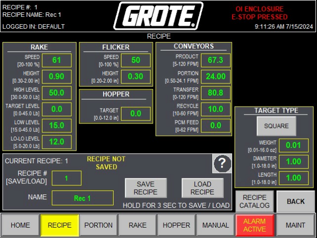
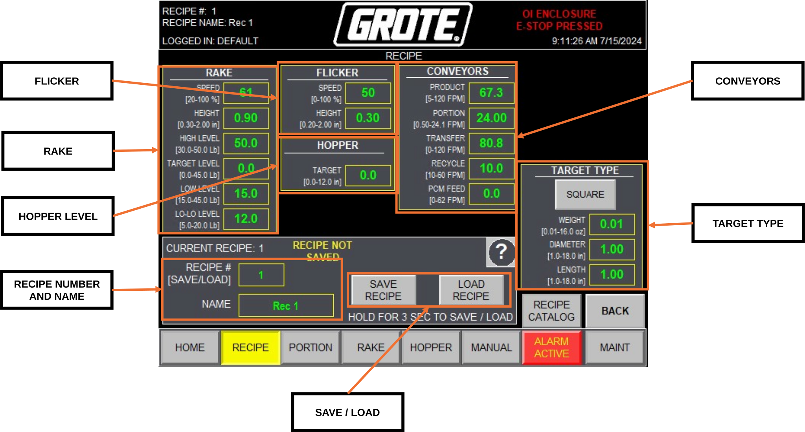
| Control / Display | Description |
|---|---|
| Recipe name field | Enter or display the name of the active recipe. |
| SAVE | Saves current field values to the active recipe slot. |
| LOAD | Loads the selected recipe into the Applicator. |
| NEW | Creates a new empty recipe slot. |
| DELETE | Deletes the selected recipe. |
| RAKE height | Target RAKE height in inches. Yellow field — editable. |
| FLICKER height | Target FLICKER height in inches. Yellow field — editable. |
| HOPPER target level | Target hopper fill level in inches. Yellow field — editable. |
| RETURN #2 speed | Baseline RETURN #2 belt speed in FPM. Yellow field — editable. |
| PRODUCT CONVEYOR speed | PRODUCT CONVEYOR speed in FPM. Yellow field — editable. |
| Target type / dimensions | Target shape and dimension fields used by the PORTION control loop. |
11.4 PORTION Screen¶
The PORTION screen monitors the applied portion weight control loop in real time.
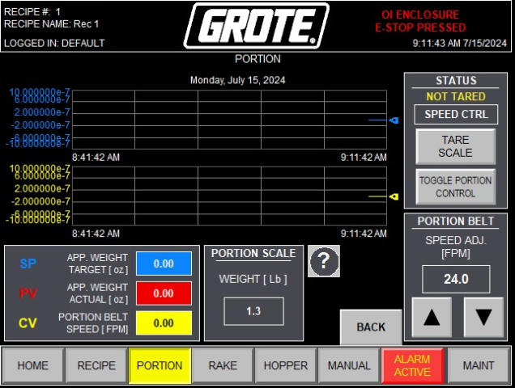
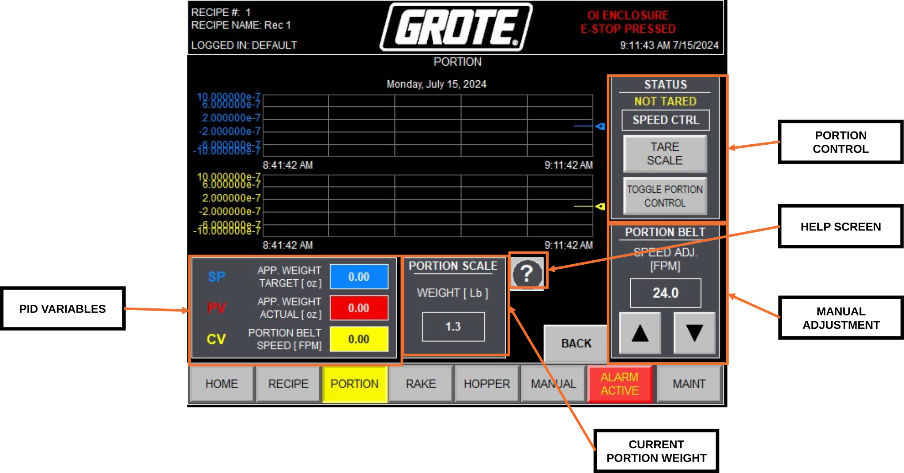
| Control / Display | Description |
|---|---|
| SP | Setpoint — target applied weight per portion [oz]. Set in the active recipe. |
| PV | Process variable — actual measured applied weight [oz] from the PORTION LOAD CELL. |
| CV | Control variable — current PORTION CONVEYOR speed output from the PID loop [FPM]. |
| Weight trend | Real-time chart of applied portion weight over time. |
| TOGGLE PORTION CONTROL | Enables or disables the portion weight PID loop. When disabled, PORTION CONVEYOR runs at manual speed. |
| TARE SCALE | Zeros the PORTION LOAD CELL. Tare with no product on the belt. |
| Manual speed | Manual PORTION CONVEYOR speed [FPM]. Active only when PORTION CONTROL is disabled. |
11.5 RAKE Screen¶
The RAKE screen monitors the RETURN #2 PID control loop that maintains RAKE topping level. For a full explanation of the control logic, see Section 6.4: RETURN #2 PID Control.
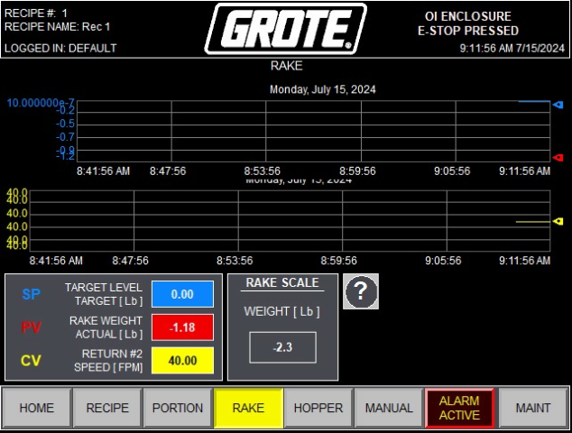
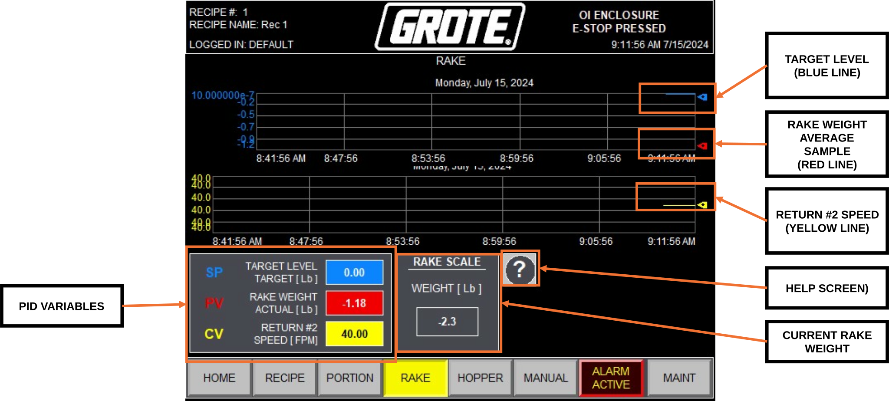
| Control / Display | Description |
|---|---|
| RAKE WEIGHT AVERAGE (red trend) | Rolling average of RAKE LOAD CELL weight [lb]. Controlled variable of the RETURN #2 PID loop. |
| TARGET LEVEL (blue trend) | Target topping level setpoint [lb]. Set in the active recipe. |
| RETURN #2 SPEED (yellow trend) | Live RETURN #2 belt speed [FPM]. PID output. |
| SP | Setpoint — target RAKE weight [lb]. |
| PV | Process variable — actual RAKE WEIGHT AVERAGE [lb]. |
| CV | Control variable — RETURN #2 speed command [FPM]. |
| RAKE SCALE | Raw RAKE LOAD CELL reading [lb] before averaging. Use during calibration and troubleshooting. |
11.6 HOPPER Screen¶
The HOPPER screen displays the hopper fill level relative to the target level set in the active recipe.
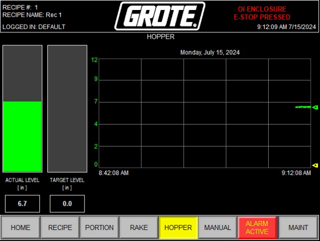
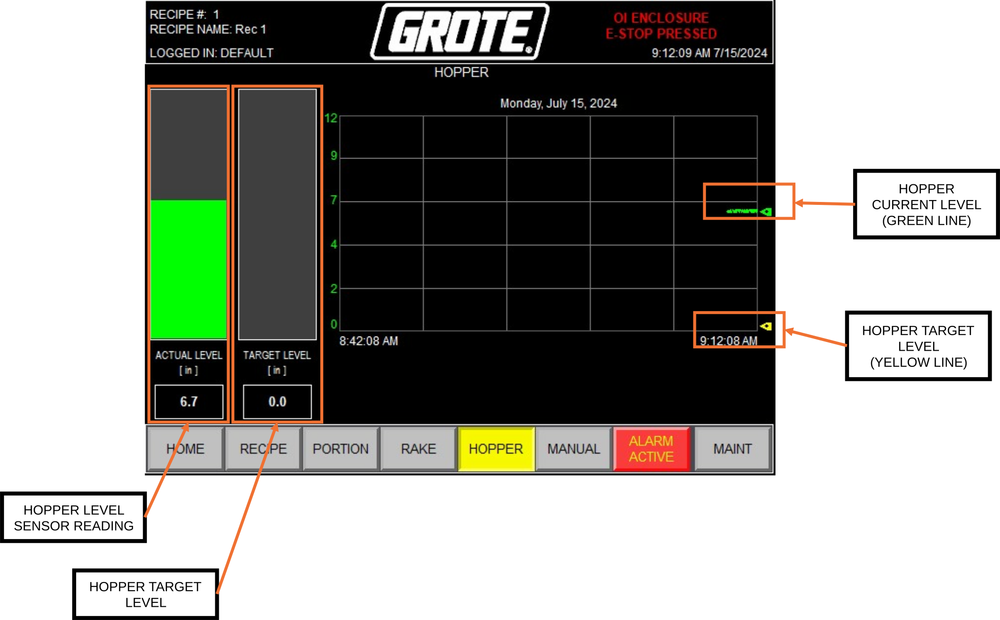
| Control / Display | Description |
|---|---|
| ACTUAL LEVEL | Current hopper fill height measured by the HOPPER HEIGHT SENSOR [in]. |
| TARGET LEVEL | Target hopper fill height from the active recipe [in]. |
| Level bar graph | Visual comparison of ACTUAL LEVEL vs TARGET LEVEL. |
| Level trend | Real-time chart of hopper fill level over time. |
11.7 MANUAL Screens¶
The MANUAL screen provides access to individual drive service screens and system diagnostic screens. Navigate to MANUAL from the top navigation bar. A GROTE technician login is not required to access MANUAL screens during normal operation.
Note
Screenshots for MANUAL sub-screens will be added in a future revision.
| Sub-screen | Navigation | Function |
|---|---|---|
| [Drive] SERVICE | MANUAL → select drive button | Per-drive diagnostic and control screen. Displays MOTOR SCALING (MIN/MAX Hz and MIN/MAX FPM), CUSTOMER ENTRY LIMITS, VFD/VSS status, current [A], frequency [Hz], live speed [FPM], and last fault code. Provides RUN FORWARD, JOG FORWARD, and MANUAL FUNCTIONS for controlled drive testing outside of a production mode. Press the Help button (?) on the drive service screen for PowerFlex 525 fault code definitions. |
| SAFETY PLC | MANUAL → SAFETY PLC | Real-time status display for all safety circuit devices: OI E-STOP, REM OI E-STOP, MAIN CONV E-STOP, PCM CONV E-STOP, MAIN GUARD SWITCH (MAIN GS), and RETURN #2 GUARD SWITCH (RETURN #2 GS). Each device shows OPEN or CLOSED. Use this screen to identify which device is preventing MACHINE ENABLE when the circuit cannot be reset. |
| INPUTS/OUTPUTS | MANUAL → INPUTS/OUTPUTS | Real-time diagnostic display of all digital inputs and outputs. Inputs include: MACHINE ENABLE, DOWNSTREAM interlock, lane photoeyes (LN1/LN2/LN3), guard switches, E-stop devices, and limit switches. Outputs include: UPSTREAM interlock, solenoids, SHREDDER INTERLOCK, and stacklight signals. Use this screen to verify signal states during troubleshooting. |
11.8 ALARMS Screen¶
The ALARMS screen provides a timestamped log of all active and historical alarm conditions.
Note
Screenshots for the ALARMS screen will be added in a future revision.
Navigate to the ALARMS screen by selecting the ALARM ACTIVE tab in the navigation bar. The tab flashes red whenever any alarm is present.
| Control / Display | Description |
|---|---|
| Alarm list | Timestamped list of active and historical alarm events. Most recent alarms appear at the top. |
| FAULT RESET | Clears latched fault conditions after the cause has been corrected. |
| ALARM ACTIVE tab | Flashes red when any alarm is present. Returns to normal when all alarms are cleared. |
For a complete list of alarm conditions and corrective actions, see Section 12.6: Alarm Conditions Reference.
11.9 MAINT Screens¶
MAINT screens require a GROTE technician login. Contact Grote Company Field Service for access. Navigate to MAINT from the top navigation bar.
Note
Screenshots for MAINT sub-screens will be added in a future revision.
| Sub-screen | Navigation | Function |
|---|---|---|
| MOTOR SETUP → [Drive] | MAINT → MOTOR SETUP → drive button | Per-drive scaling configuration. Sets MOTOR SCALING MIN/MAX [Hz] and MIN/MAX [FPM], and CUSTOMER ENTRY LIMITS MIN/MAX [FPM]. Also provides MANUAL FUNCTIONS for drive testing. Changes here affect the limits visible on the MANUAL → [Drive] SERVICE screen. |
| CALIBRATION | MAINT → CALIBRATION | Load cell and height sensor calibration. Tabs: RAKE LOAD CELL, PORTION LOAD CELL, HOPPER HEIGHT, FLICKER HEIGHT, RAKE HEIGHT. Use TEACH MIN and TEACH MAX buttons — hold each for 3 seconds to capture the calibration value. See Section 8, Section 9, and Section 10 for full calibration procedures. |
| HOPPER | MAINT → HOPPER | Sets HOPPER OVERSHOOT HEIGHT (the height above TARGET LEVEL the hopper fills to before the fill cycle stops) and HOPPER customer entry limits. |
| MACHINE OPTIONS | MAINT → MACHINE OPTIONS | Toggle panel enabling or disabling all optional equipment and configuration settings. See Section 11.12. |
| POTENTIOMETER OVERRIDE | MAINT → POTENTIOMETER OVERRIDE | Description and screenshots to be added in a future revision. |
| RUN OPTIONS | MAINT → RUN OPTIONS | Description and screenshots to be added in a future revision. |
11.10 Applicator Status Banner¶
The Applicator Status Banner occupies the top of the HOME screen and updates continuously to reflect the current machine state. It is the primary at-a-glance indicator during operation.
| Banner Message | Color | Condition |
|---|---|---|
| MACHINE FAULTED GO TO ALARMS SCREEN |
RED | Active fault. Navigate to ALARMS screen and press FAULT RESET after correcting each condition. |
| MAJOR FAULT EXISTS MACHINE STOPPED CHECK ALARMS |
RED | Critical fault. Applicator stopped. Navigate to ALARMS screen. |
| LOCAL MODE ONLY FUNCTION PUT MACHINE IN LOCAL MODE |
RED | A LOCAL-only function was attempted in REMOTE mode. Switch to LOCAL at the HOME screen. |
| OI ENCLOSURE E-STOP PRESSED | RED | Emergency stop active at OI enclosure. Pull the actuator to reset, then press MACHINE ENABLE. |
| PRODUCT CONVEYOR E-STOP PRESSED | RED | Emergency stop active at PRODUCT CONVEYOR. Pull the actuator to reset, then press MACHINE ENABLE. |
| INFEED CONVEYOR E-STOP PRESSED (WHEN EQUIPPED) | RED | Emergency stop active at INFEED CONVEYOR. Pull the actuator to reset, then press MACHINE ENABLE. |
| OUTFEED CONVEYOR E-STOP PRESSED | RED | Emergency stop active at OUTFEED CONVEYOR. Pull the actuator to reset, then press MACHINE ENABLE. |
| REMOTE OI ENCLOSURE E-STOP PRESSED (WHEN EQUIPPED) | RED | Emergency stop active at remote OI. Pull the actuator to reset, then press MACHINE ENABLE. |
| MAIN GUARD OPEN | RED | MAIN GUARD is open. Close the guard fully, then press MACHINE ENABLE. |
| RETURN #2 GUARD OPEN | RED | RETURN #2 guard is open. Close the guard fully, then press MACHINE ENABLE. |
| CONTROL POWER REQUIRES RESET HOLD AND RELEASE MACHINE ENABLE BUTTON |
YELLOW | Control power requires reset. Hold and release the MACHINE ENABLE button. |
| CONTROL POWER RESET IN PROGRESS - PLEASE WAIT - |
YELLOW | Control power reset sequence in progress. Wait for completion. |
| MOVING RAKE AND FLICKER INTO POSITION - PLEASE WAIT - |
YELLOW | RAKE and FLICKER are moving to recipe positions. Wait for travel to complete. |
| ENABLE PRODUCT BELT TENSION | YELLOW | PRODUCT CONVEYOR tension cylinder is not extended. Enable from the HOME screen. |
| ENABLE PORTION CONVEYOR TENSION | YELLOW | PORTION CONVEYOR tension cylinder is not extended. Enable from the HOME screen. |
| MACHINE REQUIRES PRIME BEFORE RUN MODE ALLOWED |
YELLOW | Priming criteria not met. Select PRIME mode and complete the priming sequence before selecting RUN. |
| MACHINE STARTED IN REMOTE MODE WAITING FOR DOWNSTREAM INTERLOCK |
YELLOW | Applicator started in REMOTE mode. Waiting for downstream interlock signal. |
| REMOTE RUN MODE STOPPED FROM OI HOLD START TO RESTART |
YELLOW | Applicator stopped from the OI while in REMOTE mode. Hold PRESS TO START to restart. |
| REMOTE RUN MODE STOPPED FROM LINE CONTROLLER OI HOLD START TO RESTART |
YELLOW | Applicator stopped by the line controller while in REMOTE mode. Hold PRESS TO START to restart. |
| ---- PRIME COMPLETED ---- REMOTE RUN MODE READY HOLD START |
YELLOW | Priming complete. Applicator in REMOTE mode and ready to start. Hold PRESS TO START. |
| MACHINE RUNNING CONSERVE MODE ACTIVE |
YELLOW | No target detected within the Conserve timer period. All motors except PRODUCT CONVEYOR stopped. Clears automatically when a target is detected. |
| MACHINE RUNNING | GREEN | Applicator running in RUN mode. Topping application active. |
| MACHINE RUNNING IN PRIME MODE | GREEN | PRIME mode sequence executing. |
| MACHINE RUNNING IN EMPTY MODE | GREEN | Applicator in EMPTY mode. |
| MACHINE RUNNING IN LOCAL BYPASS MODE | GREEN | PRODUCT CONVEYOR running without topping application. LOCAL control. |
| MACHINE RUNNING IN REMOTE BYPASS MODE | GREEN | PRODUCT CONVEYOR running without topping application. REMOTE control. |
| MACHINE RUNNING IN WASH MODE | GREEN | Applicator in WASH mode at preset speeds and heights. |
| ---- PRIME COMPLETED ---- LOCAL RUN MODE READY HOLD START |
GREEN | Priming complete. Applicator in LOCAL mode and ready to start. Hold PRESS TO START. |
| PRIME MODE READY HOLD START | GREEN | PRIME mode selected and ready. Hold PRESS TO START for three seconds. |
| EMPTY MODE READY HOLD START | GREEN | EMPTY mode selected and ready. Hold PRESS TO START for three seconds. |
| BYPASS MODE READY HOLD START | GREEN | BYPASS mode selected and ready. Start the Applicator. |
| WASH MODE READY HOLD START | GREEN | WASH mode selected and ready. Hold PRESS TO START for three seconds. |
Note
Two banner messages currently display "HMI" as they appear on the OI screen. These will be updated to read "OI" in a future PLC revision.
11.11 Stacklight Reference¶
| Indicator | State | Meaning |
|---|---|---|
| HORN | Pulsing | Applicator starting |
| RED | Blinking | Not enabled |
| RED | Solid | Faulted |
| YELLOW | Blinking | Low topping level |
| YELLOW | Solid | Topping level empty |
| GREEN | Blinking | Ready to run |
| GREEN | Solid | Running |
11.12 MACHINE OPTIONS Reference¶
| Option | Function | Default |
|---|---|---|
| IMPERIAL / METRIC | Sets unit system for all weight and dimension displays throughout the OI. | IMPERIAL |
| RAKE HEIGHT ADJ / NO RAKE HEIGHT ADJ | Enables or disables the RAKE HEIGHT MOTOR and associated controls. | RAKE HEIGHT ADJ |
| FLICKER HEIGHT ADJ / NO FLICKER HEIGHT ADJ | Enables or disables the FLICKER HEIGHT MOTOR and associated controls. | FLICKER HEIGHT ADJ |
| HOPPER SENSOR / NO HOPPER SENSOR | Enables or disables the HOPPER HEIGHT SENSOR input. | HOPPER SENSOR |
| PORTION SCALES / NO PORTION SCALES | Enables or disables the PORTION LOAD CELL inputs and PORTION PID loop. | PORTION SCALES |
| RAKE SCALES / NO RAKE SCALES | Enables or disables the RAKE LOAD CELL inputs and RETURN #2 PID loop. | RAKE SCALES |
| SHREDDER CONTROL / NO SHREDDER | Enables or disables the SHREDDER interlock output and automated fill sequence. | NO SHREDDER |
| PCM CONV / NO PCM CONV | Enables or disables the PCM conveyor option. | NO PCM CONV |
| AUX 1 CONV / NO AUX 1 CONV | Enables or disables the AUX 1 auxiliary conveyor. | NO AUX 1 CONV |
| AUX 2 CONV / NO AUX 2 CONV | Enables or disables the AUX 2 auxiliary conveyor. | NO AUX 2 CONV |
| SPEED FOLLOW / NO SPEED FOLLOW | Enables or disables external speed follow (line synchronization) input. | NO SPEED FOLLOW |
| CONSERVE MODE TIME [MS] | Conserve timer duration in milliseconds. Set based on target travel time from photoeye to drop point at operating line speed. | 30000 |
| ALLOWED # OF RECIPES | Maximum number of stored recipes. System supports up to 128. | 40 |